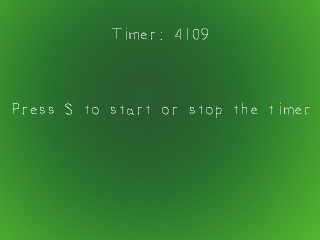
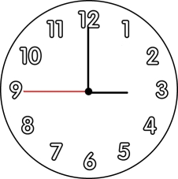
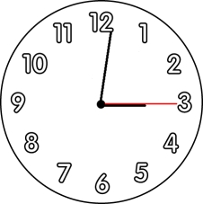

你已经学习了有关事件驱动的东西，现在是时候来做一些时间驱动的事情了。理解如何处理时间是制作游戏的关键。在本节课中，我们将编写一个简单的可以启动和停止的计时器。现在假如你想要为某事计时30秒，但是你没有停表。如果有一个带秒针的时钟挂在墙上，你会等它到了15秒的倍数：
然后你会一直等到秒针到达从起点向前30秒的地方。
这里的计时器使用了相同的原理。SDL在你的程序里运行了一个计时器，你可以通过

然后你会一直等到秒针到达从起点向前30秒的地方。

这里的计时器使用了相同的原理。SDL在你的程序里运行了一个计时器，你可以通过
SDL_GetTicks()获取它的时间，结果以毫秒为单位。如果你想为了某事计时1000毫秒，你会先保存开始时间，然后一直等到当前时间与开始时间相差1000毫秒的时刻。//头文件 #include "SDL/SDL.h" #include "SDL/SDL_image.h" #include "SDL/SDL_ttf.h" #include <string> #include <sstream>
除了通常使用的头文件，我们还包含了string stream的头文件。我会在后面解释string stream的作用。
int main( int argc, char* args[] )
{
//退出标志
bool quit = false;
//计时器启动时间
Uint32 start = 0;
//计时器的启动/停止标志
bool running = true;
在我们的主函数的顶部，我们有两个将要用于制作计时器的变量。其中，“start”变量保存了计时器启动的时间，"running"标志跟踪了计时器是否正在运行。
//启动计时器
start = SDL_GetTicks();
//当用户还没有退出时
while( quit == false )
{
当我们完成初始化并加载好表面时，是时候启动计时器了。
我们通过调用
我们通过调用
SDL_GetTicks()获得当前时间并启动计时器，然后进入我们的主循环。 //当有时间需要处理
while( SDL_PollEvent( &event ) )
{
//如果有一个按键被按下
if( event.type == SDL_KEYDOWN )
{
//如果“s”被按下
if( event.key.keysym.sym == SDLK_s )
{
//如果计时器正在运行
if( running == true )
{
//停止计时器
running = false;
start = 0;
}
else
{
//启动计时器
running = true;
start = SDL_GetTicks();
}
}
}
这里我们处理了“s”键被按下的事件，此时我们启动或停止计时器。
如果计时器正在运行，我们将"running"标志设为false，然后将start设为0，这么做是因为我不喜欢杂散值。如果计时器已经停止，我们将"running"标志设为true，然后使用我们在进入主循环前所采用的方式启动计时器。
如果计时器正在运行，我们将"running"标志设为false，然后将start设为0，这么做是因为我不喜欢杂散值。如果计时器已经停止，我们将"running"标志设为true，然后使用我们在进入主循环前所采用的方式启动计时器。
//如果计时器正在运行
if( running == true )
{
//以string形式存储的计时器时间
std::stringstream time;
//将计时器时间转换为string
time << "Timer: " << SDL_GetTicks() - start;
在我们应用完背景表面和信息表面后，我们检查一下计时器是否正在运行。如果是的，我们将计时器时间显示出来。
计算计时器时间的公式是：
所以这里我们将"Timer: " + 计时器时间传入string stream中。
我们创建了一个叫做“time”的string stream对象，它保存了计时器的信息。String stream对象允许你传入不同类型的变量来构造string。就和你看到的一样，它的功能类似于cout，但它不会将所有东西输出到控制台，而是将文本保存在string stream中，以供我们使用。
对于那些还在使用VC++ 6.0的人来说，你可能需要将SDL_GetTicks() - start转换成一个整数。
计算计时器时间的公式是：
计时时间 = 当前时间 - 开始时间
所以，如果你在SDL_GetTicks()返回10,000的时候启动计时器，并且现在SDL_GetTicks() 的结果为 20,000, 那么这个式子的运算结果是10,000，意味着从计时器启动时开始，已经经过了10秒钟的时间。所以这里我们将"Timer: " + 计时器时间传入string stream中。
我们创建了一个叫做“time”的string stream对象，它保存了计时器的信息。String stream对象允许你传入不同类型的变量来构造string。就和你看到的一样，它的功能类似于cout，但它不会将所有东西输出到控制台，而是将文本保存在string stream中，以供我们使用。
对于那些还在使用VC++ 6.0的人来说，你可能需要将SDL_GetTicks() - start转换成一个整数。
//渲染时间表面
seconds = TTF_RenderText_Solid( font, time.str().c_str(), textColor );
//应用时间表面
apply_surface( ( SCREEN_WIDTH - seconds->w ) / 2, 50, seconds, screen );
//释放时间表面
SDL_FreeSurface( seconds );
}
//更新窗口
if( SDL_Flip( screen ) == -1 )
{
return 1;
}
}
然后，我们使用string stream中的文本渲染出计时器时间，接着将其应用到窗口中，最后再将它释放。
在窗口更新后，我们继续执行主循环。
在窗口更新后，我们继续执行主循环。